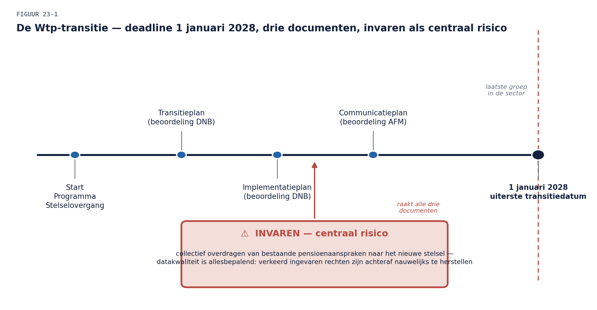

Casus: het Programma Stelselovergang
⏱ 14 minMeridiaan staat voor de grootste architectuuropgave in haar bestaan: de Wtp-transitie (Wet toekomst pensioenen) — de overgang naar het nieuwe pensioenstelsel, met een uiterste transitiedatum die voor Meridiaan, als laatste groep in haar sector, op 1 januari 2028 valt. Drie verplichte documenten moeten worden opgeleverd: het transitieplan en het implementatieplan (beide te beoordelen door DNB) en het communicatieplan (te beoordelen door AFM). De kern van de architectonische opgave: invaren — het collectief overdragen van bestaande pensioenaanspraken naar het nieuwe stelsel — met datakwaliteit als het risico dat er allesbepalend uitspringt: verkeerd ingevaren rechten zijn achteraf nauwelijks te herstellen.
Dit programma is zwaarder, politieker en onomkeerbaarder dan het werkgeversdossier (niveau 1) of het Mutatieplatform (niveau 2). Het is ook de laatste keer dat u met Meridiaan werkt in deze cursus — en de eerste keer dat het niet gaat om wát u ontwerpt, maar om hoe overtuigend u kunt verantwoorden wat u ontworpen heeft.
